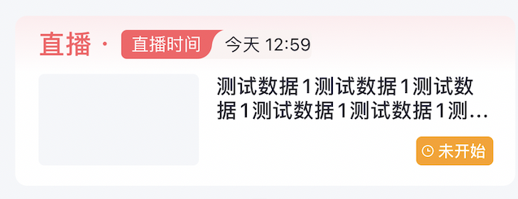
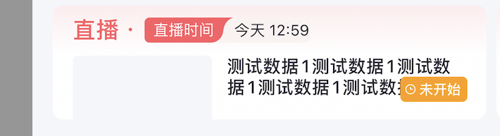
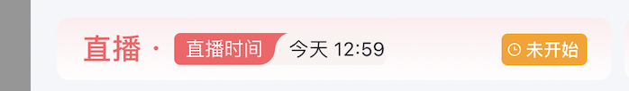
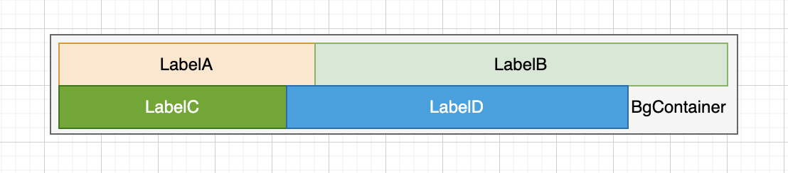
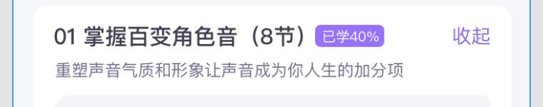

实现一个带有内边距的标签 通过使用 UIView 的 intrinsicContentSize 属性实现，我们可以为 UILabel 设置 contentEdgeInsets。在布局时，只需设置 position 位置，无需计算内容长度再添加内边距约束。
1 2 3 4 5 6 7 8 9 10 11 12 13 public class PaddingLabel : UILabel {public var contentEdgeInsets: UIEdgeInsets = .zeropublic override func drawText (in rect : CGRect ) {super .drawText(in: rect.inset (by: contentEdgeInsets))public override var intrinsicContentSize: CGSize {let size = super .intrinsicContentSizereturn CGSize (width: size.width + contentEdgeInsets.left + contentEdgeInsets.right,+ contentEdgeInsets.top + contentEdgeInsets.bottom)
约束内部约束优先级 Demo1 如下图所示，”未开始”标签位于右下角，与底部的距离为15。然而，当整个容器的高度减少时，标签会向上移动。在这种情况下，标签需要在距离顶部10的位置停止移动与底部15的距离会产生冲突。这是因为加上标签本身的高度已经大于容器的最小高度限制。



1 2 3 4 5 6 7 8 in CGSize (width: 53 , height: 20 ))set (14 ).priority(.low)10 )
上述代码中.priority(.low)和.priority(.high)实际上是都可以起作用的
.priority(.required) // 默认
优先级范围：约束优先级的值范围为1到1000，其中1000表示必需的优先级（.required）。
必需优先级：.required（数值为1000）表示最高优先级，系统必须满足该约束。如果无法满足一个或多个必需的约束，布局将被认为是无效的。
高优先级：.defaultHigh（数值为750）表示较高优先级，系统会尽可能满足这些约束，但在必要时可以选择不满足它们。这些约束通常用于定义布局中的主要元素。
低优先级：.defaultLow（数值为250）表示较低优先级，系统可以在满足高优先级约束的前提下尽量满足这些约束。这些约束通常用于定义布局中的次要元素。
自定义优先级：可以为约束分配介于1和1000之间的任意优先级值。但是，通常建议使用.defaultHigh、.defaultLow或.required这样的预定义常量，以保持代码的清晰和可读性。
Demo2 如下图所示，一个容器有两行，每行有两个label长度不固定，容器右边距和内容长的一行保持一致。

1 2 3 4 5 6 7 8 9 10 11 12 13 14 15 16 17 18 19 20 21 22 23 24 25 26 27 28 29 30 31 32 33 34 35 36 37 38 39 40 41 - (void)initViews {UILabel * labelTotal = [[UILabel alloc] init ];= @"观看" ;^ (MASConstraintMaker * make) {0 );0 );UILabel * labelLine1 = [[UILabel alloc] init ];= @"1111" ;^ (MASConstraintMaker * make) {0 );0 );UILabel * labelMT = [[UILabel alloc] init ];= @"实收金额" ;^ (MASConstraintMaker * make) {0 );2 );UILabel * labelLine2 = [[UILabel alloc] init ];= @"22212221" ;^ (MASConstraintMaker * make) {2 );0 );^ (MASConstraintMaker * make) {
抗压缩：多元素布局 如下图所示，左侧有文本，右侧有按钮，紫色标签跟在文本后面。左侧文本可以自动伸缩，但不能超过按钮的右边距。通过设置抗压缩属性优先级以及紫色标签和右侧按钮之间的弹性约束实现。

1 2 3 4 5 6 7 8 9 10 11 12 13 14 15 16 17 18 19 20 21 22 23 in 16 )9 )26 )in 5 )in 30 )28 + 30 )
约束动画 然后通过调用 UIView.animate(withDuration:animations:) 并在闭包中调用 self.view.layoutIfNeeded()，我们实现了红色方块的平滑动画。
1 2 3 4 5 6 7 8 9 10 11 12 13 14 15 16 17 18 19 20 21 22 23 24 25 26 27 28 29 30 31 32 33 34 35 36 37 38 39 class ViewController : UIViewController {let redSquare = UIView ()let animateButton = UIButton ()override func viewDidLoad () {super .viewDidLoad()= .redin 100 )"Animate" , for: .normal)self , action: #selector (animateSquare), for: .touchUpInside)in - 20 )@objc func animateSquare () {in - 100 )UIView .animate(withDuration: 0.5 ) {self .view.layoutIfNeeded()
布局经验分享 通常布局存在两种情况：
父视图已具备固定的宽高和位置。在这种情况下，内部视图可以相对于父视图设置约束。但是，如果父视图最开始的宽高为0，且左右边距有固定的内边距inset值，会产生冲突。为避免这种冲突，要么在初始化时为父视图设置一个非零的宽高，要么子视图有的宽高的约束。
父视图只需要确定其位置，其尺寸由内部视图撑开。在这种情况下，父视图的宽高可以由内部子视图的布局撑开，无需为父视图设置固定的尺寸约束。
1 2 3 4 5 6 7 8 9 10 11 12 13 14 15 let contentWidth = UIDevice .screenWidthin in set (16 )UIDevice .screenWidth - 32 )set (12 )39 )
当view靠内部撑大，有个view又是frame绝对布局，需要尝试调整translatesAutoresizingMaskIntoConstraints属性。
优先用撑大的方法确定视图布局，特别是结合Stackview使用非常方便，避免臃肿的计算高宽的代码。
StackView 自动撑开注意事项 1、当向 StackView 添加子视图时，StackView 会根据子视图的尺寸自动撑开，仅需负责设置位置。但在使用 StackView 时，需注意以下几点：
在使用 addArrangedSubview 添加子视图时，子视图的宽度或高度必须存在。例如，在垂直布局的 StackView 中，如果子视图的高度为0，即使之后更新高度，也无法正常撑开 StackView。
对于 StackView 的子视图，通过设置 hidden 属性即可实现正常布局，无需更新被隐藏的子视图的宽度或高度。
在 iOS 16 之前，为 UIStackView 设置背景色无效。从 iOS 16 开始，为 UIStackView 设置背景色是有效的，下图是一个兼容方案。1 2 3 4 5 6 7 8 9 10 11 12 13 14 15 16 17 18 19 20 21 22 23 24 25 26 27 class StackView : UIStackView {private var color: UIColor ?override var backgroundColor: UIColor ? {get { return color }set {= newValueself .setNeedsLayout()private lazy var backgroundLayer: CAShapeLayer = {let layer = CAShapeLayer ()self .layer.insertSublayer(layer, at: 0 )return layeroverride func layoutSubviews () {super .layoutSubviews()if layer.cornerRadius > 0 {= UIBezierPath (roundedRect: self .bounds, cornerRadius: layer.cornerRadius).cgPathelse {= UIBezierPath (rect: self .bounds).cgPath= self .backgroundColor? .cgColor
2、不同fill规则
fillEqually：在这种模式下，StackView会将其总的可用空间等分给所有的子视图，无论每个子视图的固有大小如何。因此，每个子视图都会有相同的大小。这种模式在你希望所有的子视图都有相同的大小时非常有用。
fillProportionally：在这种模式下，StackView会根据每个子视图的固有大小来分配空间。如果StackView的空间允许，每个子视图都会保持其固有大小。如果StackView的空间不足以让所有的子视图都达到他们的固有大小，那么StackView会按照子视图的固有大小的比例来缩小他们的大小。如果StackView的空间大于所有子视图的固有大小的总和，那么StackView会按照子视图的固有大小的比例来增加他们的大小。
equalSpacing时，UIStackView会尽可能地使得所有子视图之间的空间保持一致。这意味着，无论子视图的大小如何，他们之间的间距都会尽可能地相等。这并不会影响到子视图本身的大小，子视图的大小仍然由他们自身的内容和其他约束来决定。
3、如果一个竖向的stackview，如果设置了高度约束，大于所有子视图的总高度，fillProportionally会让子视图拉伸变形。如果是fill就不会变形，会留出空余区域。如果没有设置高度约束，这两个没有区别。
WKWebView 高度计算问题 在计算 WKWebView 高度时，请注意以下要点：
在初始化 WKWebView 约束时，请务必设置一个固定的非零高度。这样，之后通过 JavaScript 获取的高度才能正常计算。
1 2 3 4 5 6 7 8 9 10 11 12 13 14 15 16 17 18 19 20 21 22 23 24 25 containerScrollView.addSubview(webView)in 11 )set (16 )UIDevice .screenWidth - 32 )10 )func loadWebContent () {if let viewModel = viewModel {let htmlString = "<head><meta name='viewport' content='width=device-width,initial-scale=1.0, maximum-scale=1.0, minimum-scale=1.0, user-scalable=no'></head>\(viewModel.topicModel.content) " nil )func webView (_ webView : WKWebView , didFinish navigation : WKNavigation !) {"document.body.scrollHeight" ) { [weak self ] value, _ in guard let self = self else { return }guard let height = value as? CGFloat else { return }self .webView.snp.updateConstraints { make in
YYLabel高度不能自动撑开问题 初始化的时候需要设置 preferredMaxLayoutWidth
UIStackView alignment导致的约束冲突 如下代码所示，竖直布局的stackview，alignment是leading。正常子view的布局只需要设置size就行，可如果子view希望距离左边缘有16的间隙，如果直接设置left.equalsTo(16)，会因为alignment = .leading导致约束冲突。
可以通过设置isLayoutMarginsRelativeArrangement和layoutMargins解决，然后子view依然只设置好自己的宽高就行。
1 2 3 4 5 6 7 8 9 10 11 let mainStackView: UIStackView = {let stackView = UIStackView ()= .vertical= 12 = .leading= true = UIEdgeInsets (top: 0 , left: 16 , bottom: 0 , right: 16 )= .fill= UIColor .clearreturn stackView